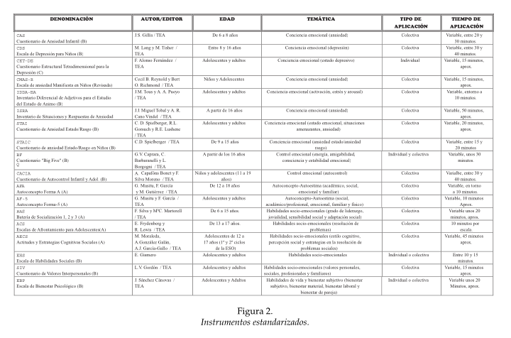
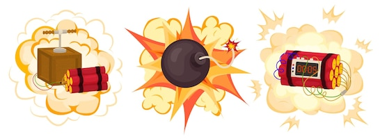
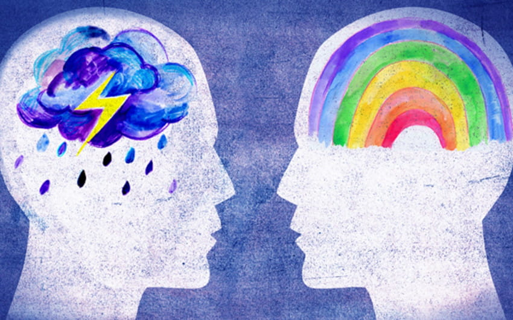
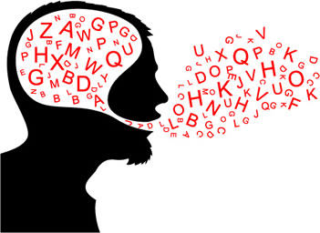

Carta del editor
Soy Iván y vengo con esta pequeña carta como un tipo de apertura hacia nuestra revista, dando un saludo formal
e invitación a leerla de forma completa para comprender las entidades emocionales que contenemos,
además de mostrar la pasión que mis aledaños y yo compartimos al hacer esta actividad.
Esta revista tiene como objetivo el dar a conocer la inteligencia emocional, además de los valores cercanos y contrarios de ésta en varios subtextos.
Desde el manejo asertivo de la inteligencia, mostrar ejemplos de la toma contraria de ésta en situaciones reales y cómo se desencadenan problemas de diferentes escalas.
El papel de las emociones en nuestro día a día es una de las cosas que menos tomamos en cuenta,
teniendo uno de los mayores impactos tanto personalmente, como en la sociedad en general. Ésto hace muy necesario el conocimiento de este tema para todos.
Además de que existe la necesidad de conocer el cómo controlar sus emociones, para ello se les invita a leer la revista, ya que cuenta con artículos interesantes acerca del tema,
cosas novedosas y diseño interesante que promete mantener su atención y le sea más sencillo entender el mensaje de la revista.
Como último detalle y antes de los agradecimientos quiero recomendar que no se limite a leer exclusivamente esta revista, ya que este tema es muy grande y complejo tanto en variantes,
como en el cómo se manifiesta la inteligencia entre cada persona. Por ello, desde mi punto de vista, es muy útil el leer revistas que abordan estos temas.
Pues sin más preludio, me es grato saber que está leyendo esta publicación y que tiene por lo menos el vago deseo de mejorar su manejo emocional,
así que mis más sinceros agradecimientos, esperando que disfrute esta revista que mis compañeros y yo creamos con gran esfuerzo y dedicación por la materia.
Articulo principal
Manejo asertivo de las emociones.
Para tener una buena inteligencia emocional, es importante tener un manejo asertivo de las emociones.
Ya que, la inteligencia emocional nos ayuda a mantener sanas nuestras relaciones con las demás personas.
¿Qué son las emociones?
“Son impulsos que nos llevan a actuar y desencadenan conductas de reacción automática.” (Guzmán L., 2016)
A continuación, se mostrarán buenas prácticas para el manejo de las emociones.
“Relajen su cuerpo
Cerramos los ojos y pensamos en tiempo, un espacio, un lugar. Traemos a nuestra mente una experiencia que nos haya resultado grata y nos trasladamos a ese momento.”
Cada persona tiene una forma distinta de relajar su cuerpo, por lo que es importante conocerse a sí mismo.
“Identificar nuestras emociones para manipularlas y ponerse en el lugar del otro.”
Es bueno ser empático, de esta forma entiendes a los demás.
“Contar con herramientas que nos permitan manejar nuestras emociones y que nos lleven a un cambio de conducta.”
Es importante corregir como manejamos nuestras emociones de una forma no asertiva.
“Considerar que nuestras acciones tienen un efecto.”
Debemos tener en cuenta que todo lo que hacemos tiene una consecuencia.
Si reaccionamos de forma agresiva hacía otra persona, esta no querrá relacionarse con nosotros o nos va a ver de una forma negativa.
“Cuando se esté enojando hacer un alto afectivo: me detengo, respiro, pienso y actúo.” (Guzmán L., 2016)
Antes de cometer cualquier acción hay que pensar en como debemos actuar.
Primero debemos hacer un análisis de la situación para no actuar de una forma agresiva.
Debemos de tomar en cuenta como va a reaccionar la otra persona dependiendo de nuestra respuesta y que es lo mejor que debemos hacer para manejar la situación sin lastimar al prójimo.
Reportaje
El concepto de inteligencia emocional es algo que se puede comocer porque hoy en día se intenta fomentar en la toma de decisiones,
pero ¿Realmente se conoce su significado?
La Asociación Elizabeth d'Ornani para el trastorno de deficit de atención e hiperactividad, en su editorial 11,
define a la inteligencia emocional como "la capacidad para relacionarnos con los demás y con nosotros mismos;
es la capacidad para conocer y entender qué sentimos y qué sienten los otros, para poder así controlar y manejar las emociones".

Partiendo de este concepto, se puede entender de mejor manera que los programas de apoyo a los jóvenes tienen como objetivo mejorar este aspecto de su vida,
pues son las personas más vulnerables en este campo de sus vidas,
pero esto no quita el hecho de que cualquier persona necesite apoyo en el fortalecimiento del control de sus emociones.
Existen varias escalas para medir el nivel de inteligencia en las personas,
entre ellos se encuentra el modelo Global de Atkinson, Furlog y Jaroff (1987); Modelo de Alkin (1969);
Modelo CIPP de Slufflebeam (1987); entre otros.
Acompanando a los modelos de evaluación, existen tambén las guías del proceso de evaluación,
las cuales ayudan a la ejecución de la evaluación de programas de forma operativa.

Caso 1
Alan es una persona reservada, la cual no disfruta de diferentes eventos que
hoy en día son muy comunes, tales como las fiestas, sin embargo, su grupo de
amigos suele disfrutar de dichos eventos y realizarlos de manera frecuente.
Constantemente había sido invitado a acompañarlos, y de momento nunca
había aceptado, siempre ponía excusas y mentiras con el fin de evitar las
salidas, pero un día le surgió el miedo de que sus amigos dejaran de
relacionarse con él, ya que este prácticamente nunca estaba con ellos, por eso
decidió ir a la próxima fiesta.
Al momento de salir se le hizo demasiado pesado, no encajaba y fingió ante
todos los presentes para no ponerlos incomodos y que todos se divirtieran.
En este ejemplo podemos observar como una persona por un medio infundido
por si mismo sobre lo que podría pasar en su circulo social, al punto de aceptar
ir a eventos a los cuales no se sentía bien, aquí el afectado solo fue él mismo,
se obligo a aceptar y asistir a un evento a costa de lo que quería en verdad, en
este caso debió haber seguido como estaba o sugerir otro tipo de evento en el
cual le gustara para no obligarse realizar aquello que no le gusta.
Caso 2
A Daniel nunca le gustaron los problemas, esto no sería malo en sí, pero para
él es mejor dejar que los otros lo pisen con tal de no involucrarse en diferentes
conflictos o disputas de diferentes tipos, incluso verbales, esto le ha traído
diferentes problemas en los cuales es común que la gente se aproveche de
cierta manera de él, lo usan de cómplice, o simplemente no les diga los errores
que tienen los demás, esto porque a su manera de pensar es casi seguro que
los demás se pongan a la defensiva a la hora en que se les menciona sus errores.
Estos hábitos no solo llegan a dañarlo a él, sino también a la gente con la que
se relaciona, esto debido a que él no los corrige o da su punto de vista en
diferentes aspectos o situaciones. Daniel debería dejar ese comportamiento y
decir más lo que piensa, además de involucrarse más para así poder ayudarse
a sí mismo y a los demás.
Tips y consejos
Identifica tus detonantes
Es imposible arreglar un problema si no se conoce su origen.
Para poder controlar tus emociones, es necesario que identifiques las situaciones que las provocan.
Aunque parezca algo simple a primera vista, en muchas ocasiones se requiere el acompañamiento de un profesional para lograrlo.

Crea empatía con los que te rodean
En el ámbito laboral es muy frecuente que entres en desacuerdos con tus colegas.
La mejor manera de encontrar un punto en común no es a través de la crítica o el juicio, sino mediante la empatía.
Intenta ponerte en los zapatos de tus compañeros para comprender mejor su postura.

Tips y consejos
Fíjate en tus palabras
Muchas personas, cuando se enfadan, suelen “desconectar” la boca de la cabeza.
Esto significa que la elección de palabras puede ser inadecuada o incluso imprudente.
Para lograr una comunicación asertiva se requiere de un uso consciente y selectivo de las palabras.

Aprende a aceptar la crítica
Uno de los temas más vistos en la carrera de psicología es el ego.
Las personas que tienen una baja autoestima o presentan indicios de egolatría tienden a tomar mal la crítica.
Aunque en un principio sea duro, aceptar y procesar inteligentemente la crítica puede llevar a un crecimiento personal y laboral.
Tips y consejos
Sé agradecido
Los individuos que son pesimistas y ven su entorno desde una perspectiva negativa todo el tiempo, por lo general tienen una inteligencia emocional poco desarrollada.
Si este es tu caso, puedes comenzar a enfocarte poco a poco en todas las cosas buenas que hay en tu vida y agradecer por ellas.
Esto te ayudará a asumir una postura más positiva.
Conclusión
Iván Hermosillo: esta materia fue y es una que sorpresivamente fue muy
importante para mi persona no solo como estudiante de
universidad, pero también como persona en general dándome
un mayor entendimiento de como funciono de forma
emocional o como debería de hacerlo.
Además de aprender el tema más cercano en fecha como lo
es el manejo emocional también recuerdo el cómo es la
motivación usando la pirámide de winslow, el estrés y como
actúa de manera negativa en nuestro cuerpo en manera
constante y el ciclo vital de las personas y los cambios que
sufrimos en este.
Así es que como una materia de este tipo me ayudo en el
pasado al conocer y actuar de forma más sana hacia mí
mismo y la gente a mi alrededor, en el caso del futuro siento
que en el ámbito personal será de gran ayuda para establecer
o fortificar relaciones más duraderas a posterior y en el
trabajo a mantener un ritmo constante y manejable sin ser
sobre atacado o suprimido de emociones.
Isaí López: la inteligencia emocional es muy importante para las relaciones sociales. De esta depende el cómo nos asociamos con los demás y el cómo nos tratan.
De la inteligencia emocional se deriva el manejo asertivo de las emociones.
Este consiste en pensar dos veces cómo vamos a reaccionar ante situaciones complejas con los demás.
Esto sirve para evitar un conflicto mayor.
De esta forma, también demostramos que somos personas con un buen manejo de nuestras emociones y al momento de relacionarnos con los demás, nos ven como una persona agradable.
Conclusión
Alonso Hernández: el control de las emociones es un tema que vemos de manera frecuente,
pues algunas personas son más tolerantes a situaciones de estrés que otras.
Aquellos que toleran el estrés es gracias a que tienen una mejor educación emocional,
mientras que otras "explotan" con más facilidad ante las "mismas condiciones",
pues su control emocional es más pobre,
dando como consecuencia conflictos con otras personas gracias a las actitudes que tienen.
Si las personas tuviecen entranada la inteligencia emocional, el mundo sería más volátil a las ideas de todos,
pero en consecuencia de los desacuerdos de las personas, la humanidad vive en una era de conflictos eterna que,
en muchas ocaciones lo llevó a casí su completa destrucción.
Aarón Quiñones: a lo largo de esta materia he sido capaz de aprender diferentes cosas, que,
aunque parecieran muy simples y lógicas, yo he dado por alto. Hubo diferentes
actividades en las que fui capaz de conocerme más, además de aprender a
relacionarme conmigo mismo gracias a las actividades que me pedían
reflexiones y pensamiento por los cuales paso.
Es importante para uno mismo tanto el conocimiento de sus emociones, como
el bueno manejo de estas, esto con el fin de saber actuar de manera asertiva y
no provocar conflictos o situaciones de las cuales te podrías arrepentir.
Fernando de la Cruz: en conclusión, la inteligencia emocional es muy importante en la vida diaria ya
que es importante aprender a manejar las emociones de una manera correcta
sin perjudicar a los demás, en esta materia aprendí esa importancia de la
inteligencia emocional y aunque no he podido desarrollarla de la forma que yo
quisiera, voy aprendiendo cosas nuevas para mejor mi capacidad del manejo
de emociones ya que yo soy una persona muy sensible y que se deja llevar por
las emociones que ocurren en el momento sin pensar en las cosas que digo
que en ocasiones pueden llegar a ser hirientes para otras personas.
También es importante conocerse a si mismo para aprender de pequeños
errores que le pueden pasar a cualquier persona y aprender de ellos para ser
una mejor persona y así no caer en el vicio de cometer los mismos errores. A
veces se puede llegar a aprender de maneras no gratas para uno mismo y son
cosas que nos pueden llegar a doler en caso de pasar, pero también es
importante aprender a cómo salir adelante de esa situación y no dejar que nos
tumbe eso. Yo aprendí de esa forma y no queda más que salir adelante y
echarle ganas a la vida.